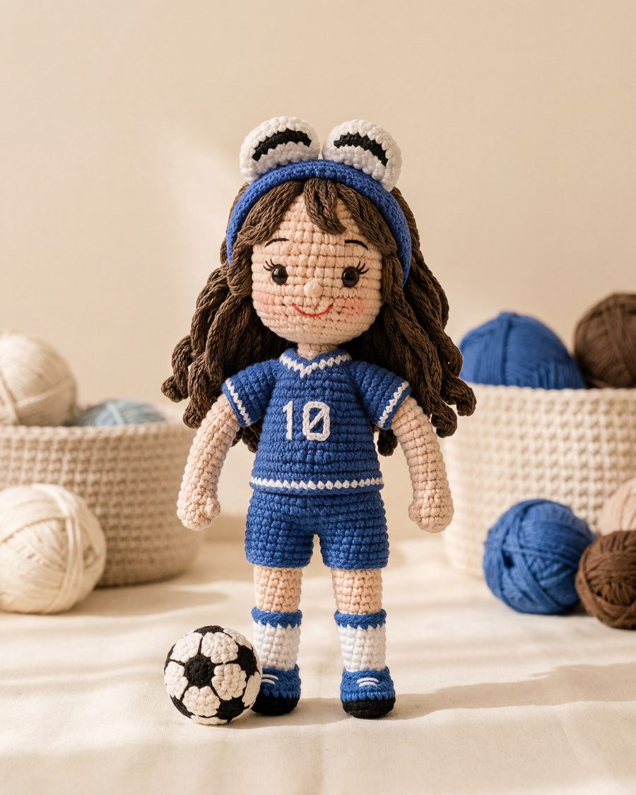
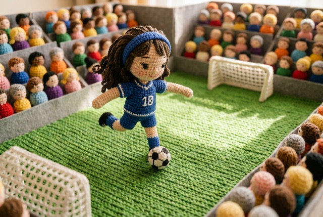
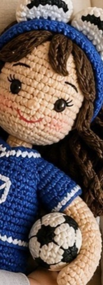

02 — Saha
Saha da bizim, gelecek de bizim!



Harbie Koleksiyonu
Harbie Futbolcu
"Saha da bizim, gelecek de bizim!"
18 numaralı forması ve takım ruhuyla çocuklara kuralları kalıpların değil, yeteneklerin yazdığını gösterir. Sahada kimin oynayacağına önyargılar değil, cesaret ve emek karar verir; her pas bir dayanışma, her gol ortak bir zaferdir.
Bu futbolcu, Hatay'daki İyiliğe Bir İlmek Atölyeleri'nde, birlikte üreterek güçlenen kadınların elinden çıktı. Tıpkı bir takım gibi çalışan atölyede her kadın bir başkasının ilmeğini tamamlar. Onu ören eller, en güzel golün dayanışmayla atıldığını; bir kadının ekonomik özgürlüğünün de tek başına değil, omuz omuza kazanıldığını biliyor.
Futbolcu Harbie, çocuğun takım ruhunu, paylaşmayı ve sağlıklı rekabeti besler. Rol yapma oyunlarında kazanmayı da kaybetmeyi de öğretir; hareket sevgisini ve özgüveni destekler. %100 pamuklu, anti-alerjik dokusu enerjik oyunlara güvenle eşlik eder.